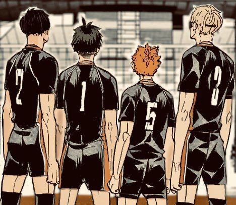
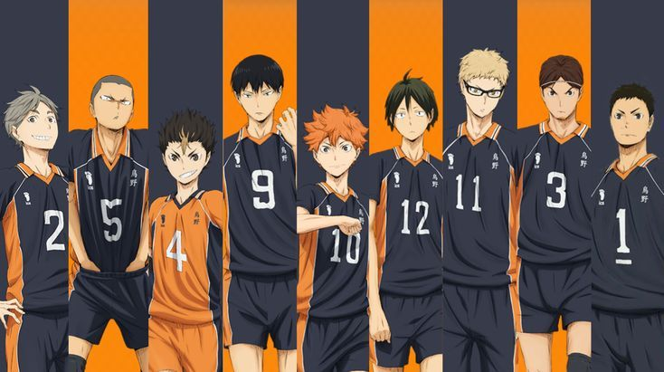
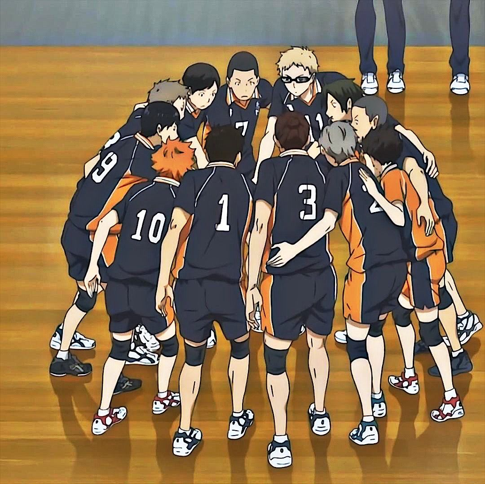
La Preparatoria Karasuno tuvo su época dorada años atrás bajo el mando del legendario entrenador Ikkei Ukai. En ese tiempo, el equipo llegó a los torneos nacionales y contaba con un jugador estrella apodado el "Pequeño Gigante", un rematador de baja estatura que dominaba el aire. Sin embargo, tras la hospitalización del entrenador y la graduación de esa generación, Karasuno cayó en el olvido. Los demás equipos se burlaban de ellos llamándolos "Los campeones caídos" o "Los cuervos que no pueden volar". La llegada de una nueva generación de jugadores de primer año cambia el destino del bando protagonista. El equipo adopta una filosofía de juego ultraofensiva llamada "Ataque Sincronizado", donde todos los jugadores (incluyendo los defensas) corren al mismo tiempo hacia la red para confundir al rival, asumiendo el riesgo de dejar su propio campo desprotegido con tal de anotar.
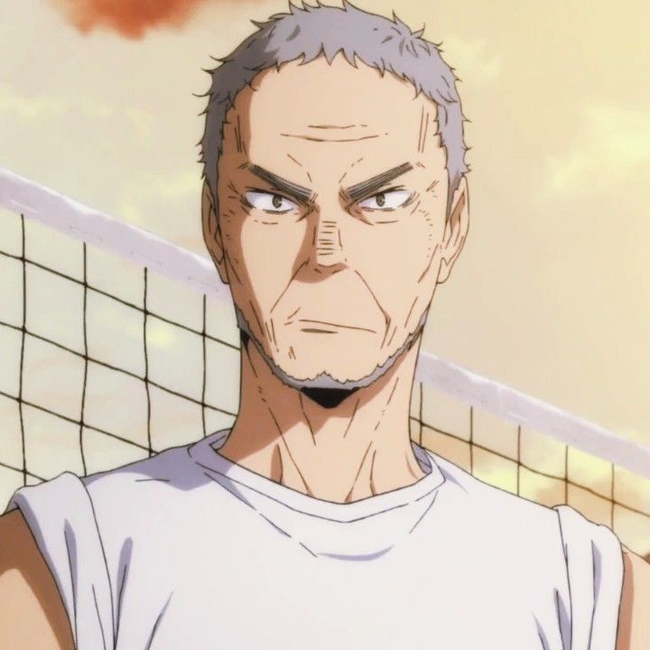
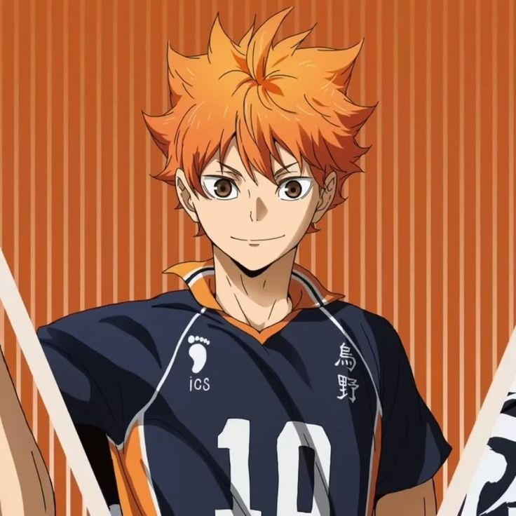
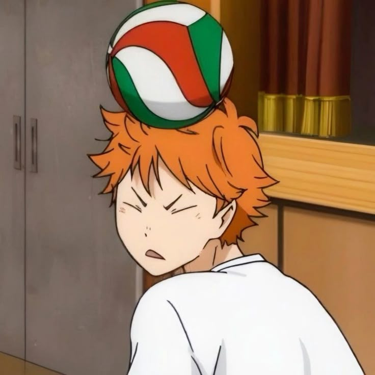
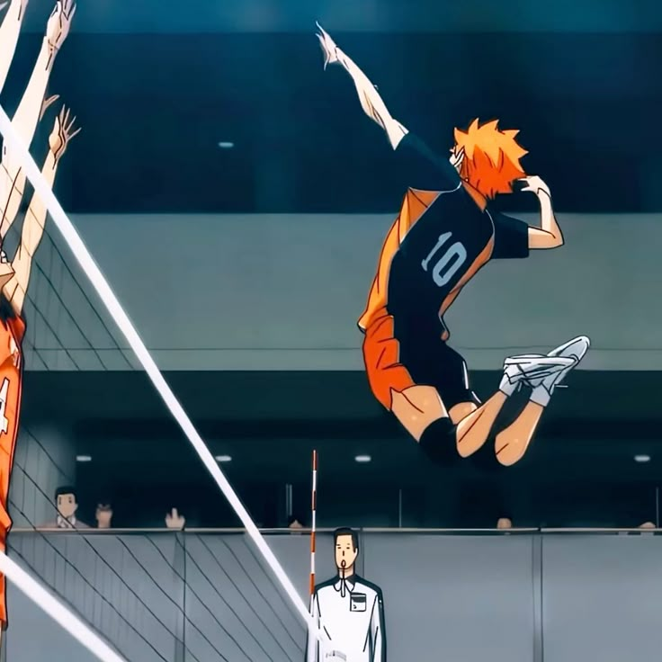
Hinata se enamoró del voleibol al ver un partido del "Pequeño Gigante" en la televisión. Al no tener un club de voleibol masculino en su secundaria, entrenó solo en las esquinas del gimnasio o con el equipo femenil. Al llegar a Karasuno, posee una condición física envidiable, una velocidad de reflejos sobrehumana y un salto vertical impresionante, pero carece por completo de técnica: no sabe recibir, sacar ni bloquear. Su evolución es el motor del bando. Pasa de depender ciegamente de los pases de Kageyama a aprender técnicas avanzadas en los campamentos de Tokio, como fintas, remates con los ojos abiertos y posicionamiento defensivo. Su rol es ser el "Señuelo Estrella", saltando con tanta velocidad que obliga a los bloqueadores enemigos a seguirlo, dejando los extremos de la red completamente libres para que sus compañeros anoten sin oposición.
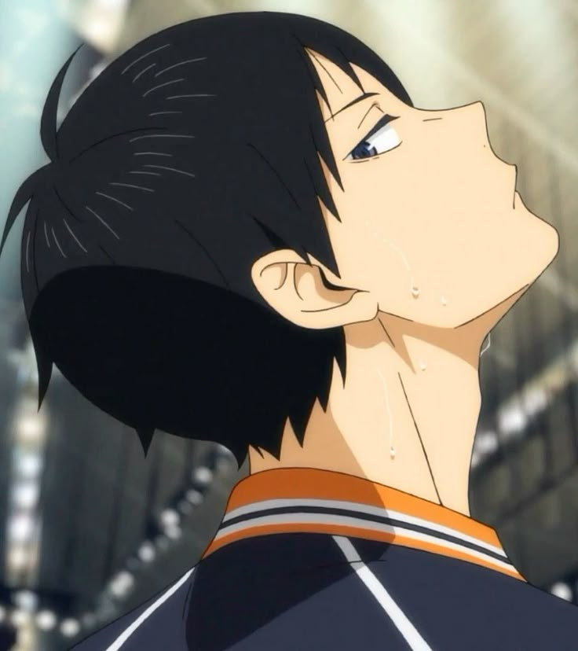
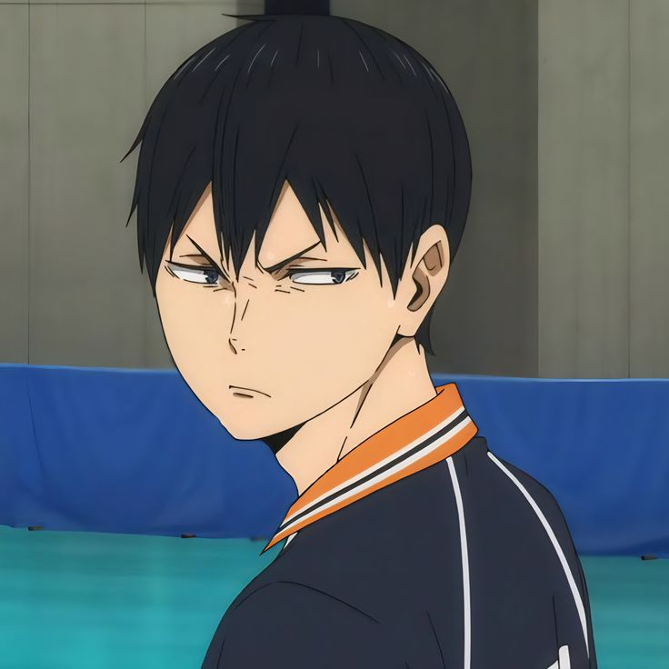
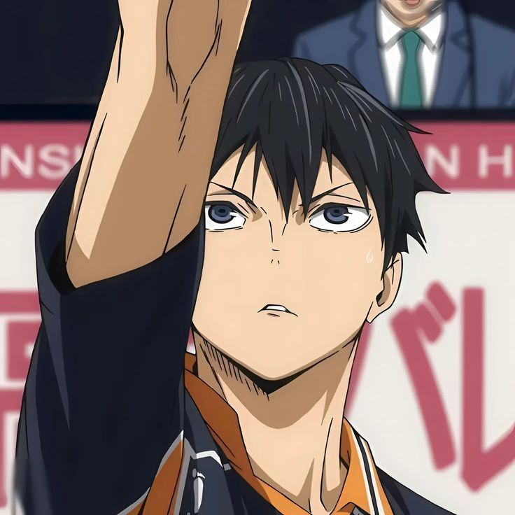
Considerado un prodigio del voleibol desde la secundaria Kitagawa Daiichi. Kageyama posee una precisión geométrica perfecta, un saque de potencia que viaja a velocidades profesionales y una visión de juego total. Sin embargo, su personalidad arrogante y egoísta hizo que sus antiguos compañeros de equipo lo abandonaran en la cancha, ganándose el apodo despectivo del "Rey de la Corte". Al entrar a Karasuno, su mentalidad choca con la de Hinata. Su evolución consiste en aprender que un colocador no es el jefe, sino un servidor del rematador. Kageyama aprende a comunicarse, a confiar en su equipo y a adaptar la altura y velocidad de sus pases a las capacidades físicas de cada jugador, convirtiéndose en el armador definitivo del bando protagonista.
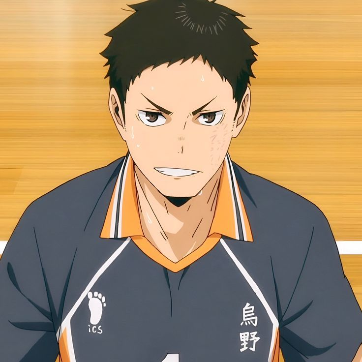
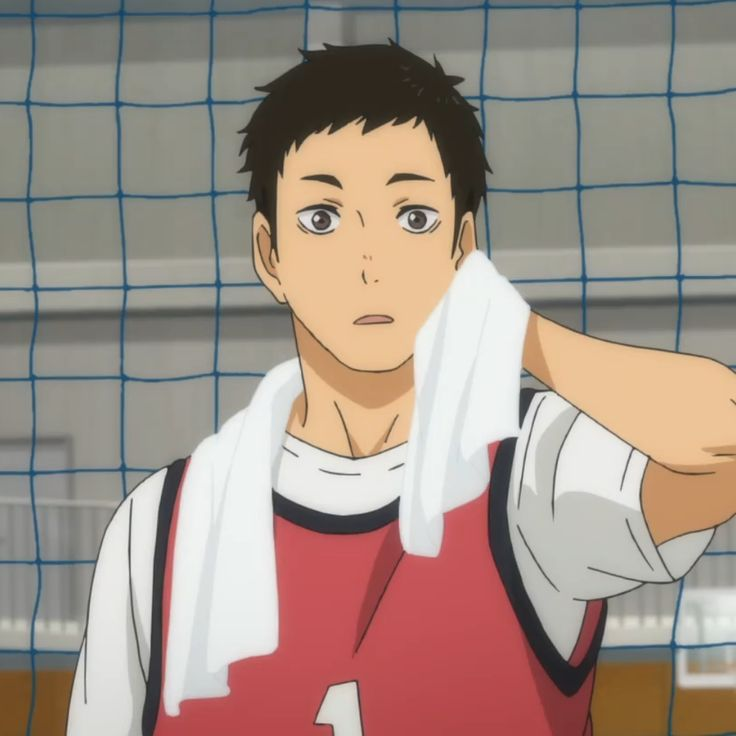
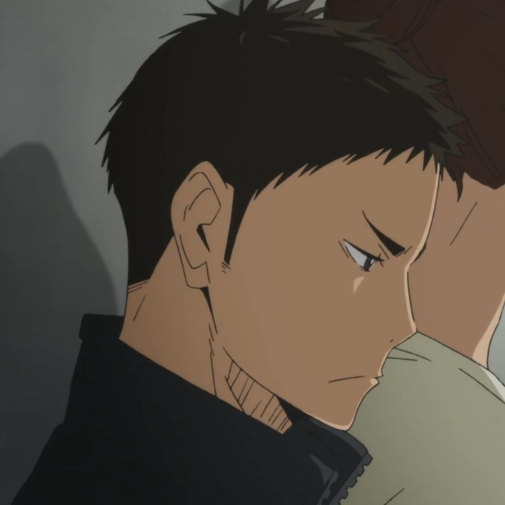
Historia y Evolución: Al ser un estudiante de tercer año, Daichi vivió la peor época del declive de Karasuno, donde ni siquiera tenían un entrenador oficial. Es el líder espiritual y el pilar defensivo del equipo. Mientras Hinata y Kageyama se encargan de las jugadas vistosas en el aire, Daichi se encarga del trabajo sucio en el suelo. Su especialidad es la recepción de transiciones y salvar balones imposibles. Su presencia transmite seguridad en momentos de alta presión psicológica; cuando el bando protagonista parece entrar en pánico por los ataques rivales, Daichi estabiliza la defensa del equipo.